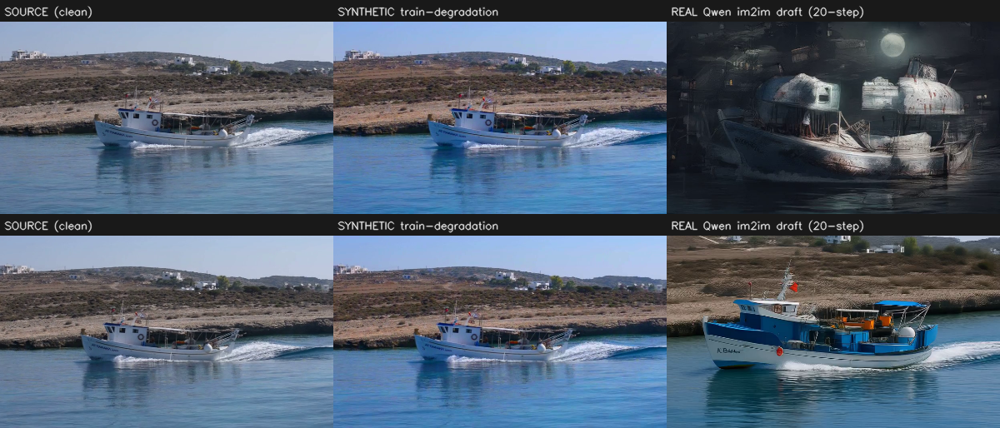

Image edits, video fixes. A per-frame image editor produces a flickery draft; a causal video model, trained on clean video only, fixes the temporal consistency.
Qwen-Image-Edit + Lightning-v2 4-step distilled LoRA,
4 steps, true_cfg_scale=1.0, fresh seed per frame (the flicker source).
The 4-step distillation is what keeps the reconstruction sharp & structure-preserving
(an 8-step non-distilled base was under-denoised / distorted). Your exact nunchaku int4 2509 build has
no H200/Hopper kernel — using the same Lightning distillation on full-precision weights; FP8-2509 next.target = clean source, draft = flickery reconstruction.[draft | source], single-step, self-supervised.
Left = clean source (INPUT). Right = per-frame 4-step distilled im2im OUTPUT (reconstruction prompt: "keep the image exactly the same"). Driving-relevant outdoor scenes — sharp, structure-preserving; the frame-to-frame variation is the flicker the video fixer removes.
Earlier 8-step non-distilled drafts were under-denoised and distorted — replaced by these 4-step distilled reconstructions. Real edit drafts (anime / Bauhaus) for flicker comparison: 1 · 2.
"Keep the image exactly the same, preserve all content, colors and structure""Reproduce this photo faithfully with the same appearance and details""Very slightly enhance sharpness and clarity, keep everything else identical"Mild edits (color grade / overcast / vintage) used for the gap study; drastic edits (anime / Bauhaus / snow / watercolor) as the real-edit test.
Flow-warped / raw flicker (mean |framet+1−framet|×100), 25 clips per set:
| draft type | flicker | |
|---|---|---|
| clean source | ~1.3 | real motion only |
| reconstruction (what we train on) | 7.6 | |
| mild edit (color grade, overcast…) | 7.2 | ≈ reconstruction |
| drastic edit (anime, Bauhaus…) | 11.2 | higher |
→ For mild / appearance-preserving edits (the Waymo case), reconstruction reproduces the editing flicker well — the flicker gap is small. Larger for drastic style edits.
48 held-out OpenVE edit clips, VBench + flow-warped flicker + CLIP edit-preservation.
| fixer trained on | flicker ↓ | motion-smooth ↑ | subject-consist ↑ | edit preserved ↑ | imaging-Q |
|---|---|---|---|---|---|
| synthetic degradation | 6.13 | 0.979 | 0.918 | 0.959 | 0.565 |
| real reconstruction | 2.04 | 0.995 | 0.969 | 0.742 | 0.469 |
The reconstruction fixer deflickers dramatically better (−67%, near a dedicated editor) — but
it partially undoes the edit (CLIP 0.959→0.742). Cause: the 8-step editor re-renders the content
(draft ≠ source), so with target = source the fixer learns to reconstruct the source
and reverts the edit at test. This pins down exactly why the structure-EXACT 4-step distilled editor
is needed: when draft ≈ source (only temporal jitter differs), target = source teaches
pure deflickering instead of edit-reversion.
